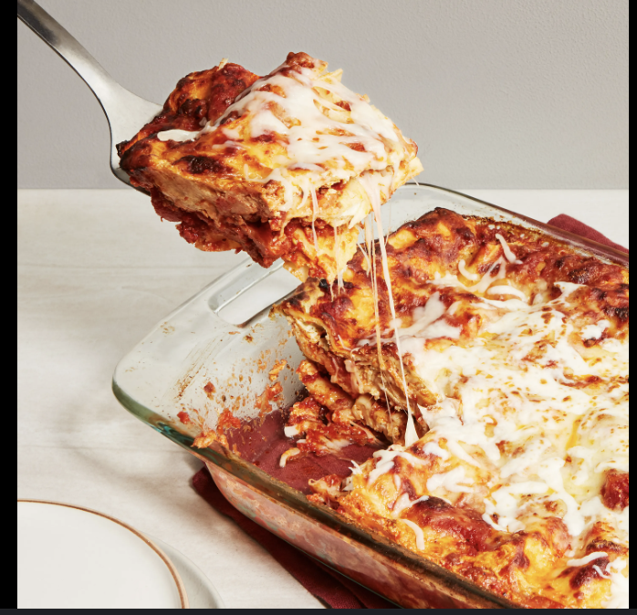

Lasagna

Ingredients
- Lasagna noodles
- Ground beef
- Tomato sauce
- Ricotta cheese
- Mozzarella cheese
- Parmesan cheese
- Garlic
- Onion
- Salt & Pepper
Instructions
- Preheat oven to 375°F (190°C).
- Cook lasagna noodles according to package instructions.
- In a pan, sauté onions and garlic, then add ground beef and cook until browned.
- Add tomato sauce and simmer for 10 minutes.
- Layer noodles, meat sauce, ricotta, and mozzarella cheese in a baking dish.
- Repeat layers and top with parmesan cheese.
- Bake for 45 minutes until golden and bubbly.
- Let it cool for 10 minutes before serving.
Odin Recipe